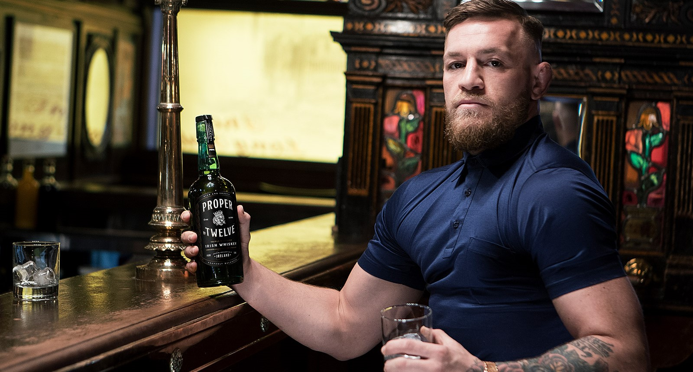
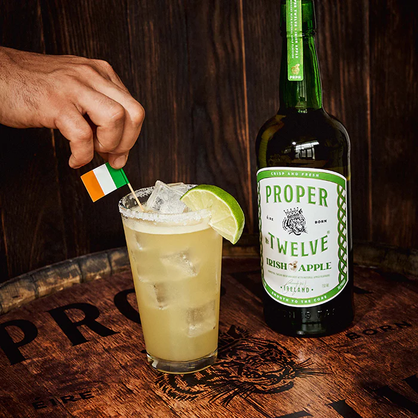

- 

Receitas
PROPER ICED COFFEE-TINI
- 2 onças adequado n* doze
- 4 onças de café gelado
- Pitada de clara de ovo
- Grãos de café para enfeitar
Detalhes

PROPER APPLE PIE MARTINI
- 2 onças adequada n° doze maçã irlandesa
- 1 onça de licor de melão
- Respingo de mistura azeda
- Clara de ovo ou espuma de taxa
- Limão para enfeitar
Detalhes

PROPER APPLE OLD FASHIONED
- 2 onças adequada n° doze maçã irlandesa
- 5 onças de xarope
- 3 Dashes de bitters de cereja
- Colher de chá de água
- Fatia de maçã para enfeitar
Detalhes

PROPER IRISH MARGARITA
- 2 onças adequada n° doze maçã irlandesa
- 5 onças de xarope
- 3 Dashes de bitters de cereja
- Colher de chá de água
- Fatia de maçã para enfeitar
Detalhes